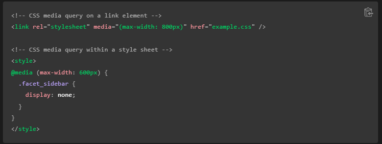

Las media queries (en español "consultas de medios") son útiles cuando deseas modificar tu página web o aplicación en función del tipo de dispositivo (como una impresora o una pantalla) o de características y parámetros específicos (como la resolución de la pantalla o el ancho del viewport del navegador).
Las media queries consisten de un tipo de medio opcional y una o más expresiones de características de medios. Varias consultas se pueden combinar utilizando operadores lógicos. No distinguen entre mayúsculas y minúsculas. El resultado de la consulta es "verdadero" cuando el tipo de medio (si se especifica) coincide con el dispositivo en el que se está mostrando el documento y todas las expresiones en el media query son "verdaderas". En este caso, se aplica los estilos correspondientes, siguiendo las reglas usuales de cascada. Las consultas sobre tipos de medios desconocidos son siempre falsas.

Se pueden redactar queries utilizando operadores lógicos, incluyendo not, and, y only.
Además se puede combinar múltiples queries en una lista separada por comas múltiples; si cualquiera de las queries en la lista es verdadera, la hoja de estilo asociada es aplicada. Esto es equivalente a una operación lógica "or".
Las listas separadas por comas se comportan como el operador or cuando es usado en media queries. Cuando utilice una lista separada por comas y alguno de los queries retorna verdadero, el estilo o la hoja de estilos sera aplicada. Cada query en una lista separada por comas es tratado como una query individual y cualquier operador aplicado a un medio no afectara a los demás. Esto significa que cada query en una lista separada por comas puede tener como objetivo diferentes medios, tipos y estados.
Si usted quiere aplicar una serie de estilos para un equipo con un ancho mínimo de 700px o si el dispositivo esta colocado en horizontal, usted puede escribir lo siguiente: